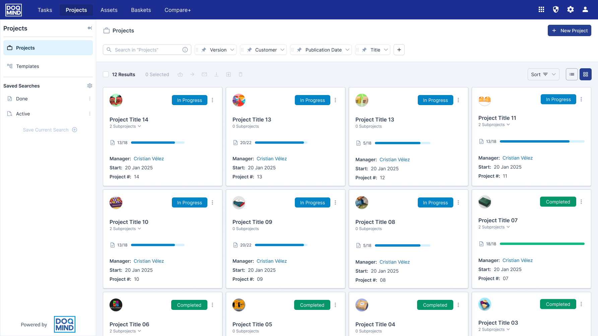
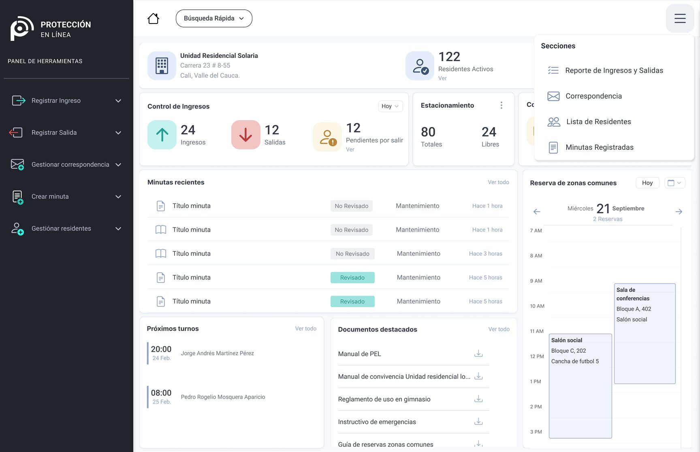
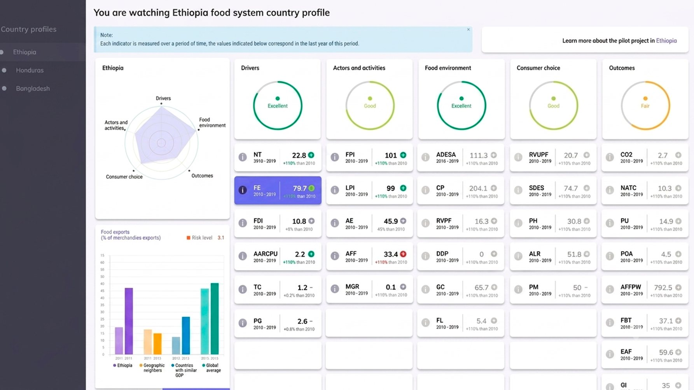
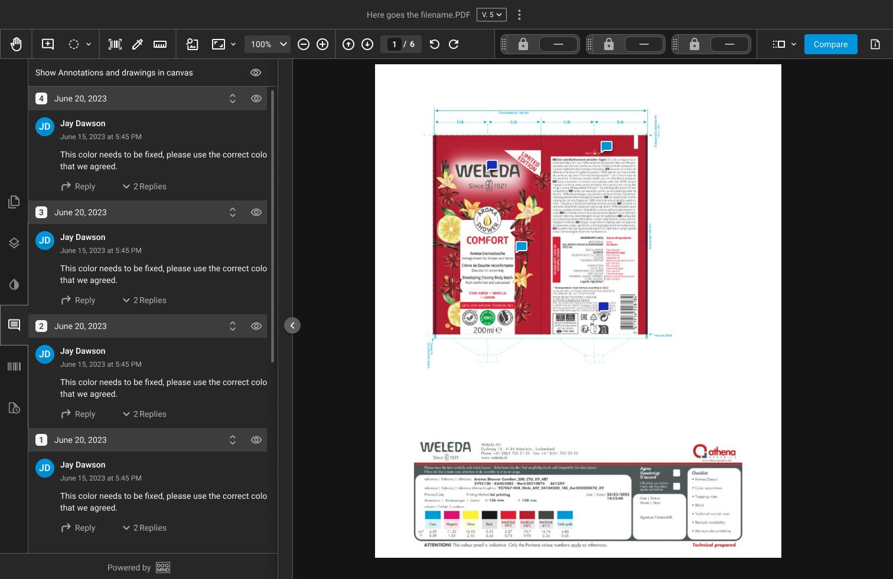
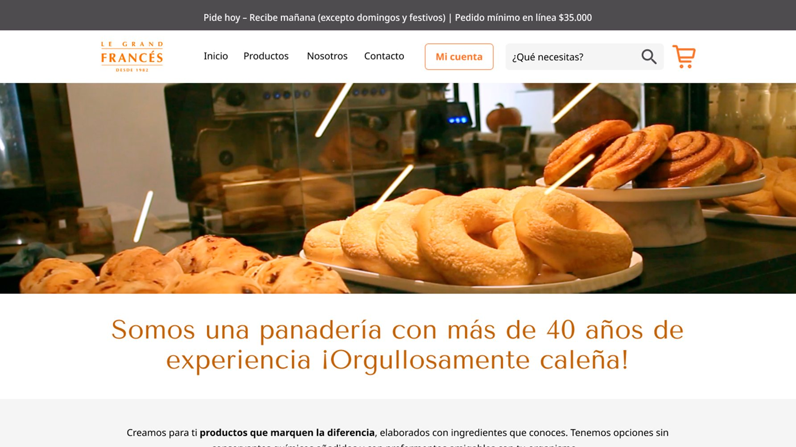
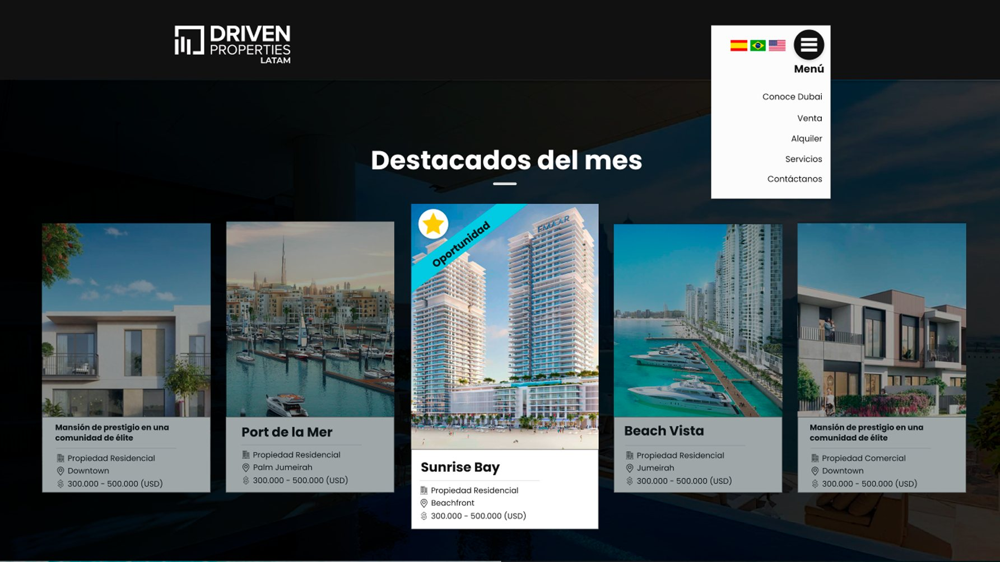
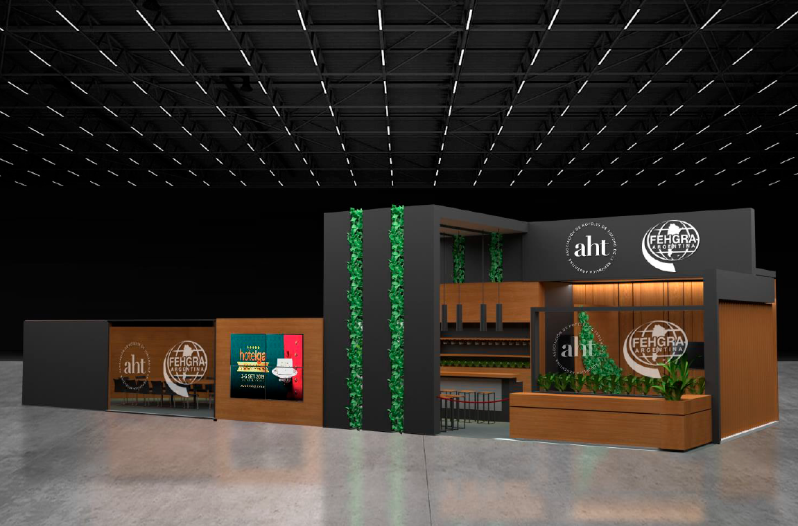

Hello, I’m Cristian Hola, soy Cristian
UX/UI Designer Diseñador UX/UI
Tech stack Stack tecnológico
- Figma
- Claude
- Perplexity
- Notion
- Maze
- Photoshop
- Illustrator
- Lightroom
- 3ds Max
- V-Ray
Recent Projects Proyectos recientes

DOQMIND UX/UIDOQMIND
SaaS 2023–Present2023–PresenteWorkflow and assets management platform Plataforma de gestión de flujos de trabajo y activos
I stepped into this project with the platform already live to fix critical issues: poorly optimized workflows causing bottlenecks and inconsistent interfaces that felt tedious to users. I redesigned dozens of screens and built a structured design system with a clear, versatile visual identity tailored for client customization. Ultimately, we optimized user task times and provided a much simpler way to search for files and manage projects. Entré a este proyecto con la plataforma ya en marcha para resolver problemas críticos: flujos mal optimizados que generaban cuellos de botella e interfaces sin consistencia visual que resultaban tediosas para el usuario. Rediseñé decenas de pantallas y estructuré un sistema de diseño con una identidad visual clara y versátil para la personalización de cada cliente. Al final, logramos optimizar los tiempos de trabajo de los usuarios y les dimos una forma mucho más sencilla de buscar archivos y gestionar sus proyectos.

Omega Security UX/UIOmega Security
B2B 2022Residential unit access management platform Plataforma de gestión de accesos para unidades residenciales
I designed from scratch the platform used by security guards and coordinators in residential complexes to manage access logs, parcel deliveries, and incident reports. To understand the real-world context, I conducted field research directly at guard posts, interviewing staff to map out time-critical actions. Based on these insights, I structured an intuitive layout with role-based access that streamlined the daily operations of the security team. The platform is currently live and actively running across the company's residential sites. Diseñé desde cero la plataforma que utilizan los vigilantes y coordinadores en unidades residenciales para gestionar accesos, paquetería y minutas de seguridad. Para entender las necesidades reales del entorno, realicé investigación de campo directamente en las porterías, entrevistando al personal operativo para mapear las tareas más críticas e inmediatas. Con esta información, definí un layout intuitivo y un sistema de permisos por roles que simplificó la rutina diaria del equipo de seguridad. La plataforma se encuentra completamente funcional, operando en tiempo real en los proyectos residenciales de la empresa.

CIAT & CGIAR foresight UX/UICIAT & CGIAR foresight
Dashboards 2021Website and interactive dashboard Sitio web y tablero interactivo
I designed an interactive dashboard for CIAT and CGIAR Foresight focused on visualizing open-data across socio-economic and food systems. My role was to structure and categorize complex variables (environmental, social, energy, and consumer choice) into a clear overview of country-level performance in regions like Ethiopia, Honduras, and Bangladesh. The tool is currently active and supports the organization’s ongoing foresight research. Diseñé un dashboard interactivo para CIAT y CGIAR Foresight enfocado en la visualización de datos abiertos sobre sistemas alimentarios y socioeconómicos. Mi rol fue estructurar y categorizar variables complejas (ambientales, sociales, energéticas y de consumo) para presentar una visión clara de la situación país en regiones como Etiopía, Honduras y Bangladesh. La herramienta está operativa y permite a la organización analizar la salud general de estas variables para respaldar sus investigaciones prospectivas.

DOQMIND UX/UIDOQMIND
SaaS 2023–Present2023–PresenteCollaborative asset viewer Visor colaborativo de assets
I designed this interface from scratch based on an initial set of technical requirements and collaborative tools. I mapped out interaction flows and structured a workspace where complex features—such as distance measuring, color layer inspection, barcode analysis, multi-page viewing, and live commenting—could coexist seamlessly. The tool is currently live, used in real-time operations, and continuously evolving. Diseñé esta interfaz desde cero a partir de una lista inicial de requerimientos técnicos y herramientas colaborativas. Me encargué de diagramar las interacciones y estructurar un espacio de trabajo donde funciones complejas como medición de distancias, inspección de capas de color, códigos de barras, paginado y comentarios en tiempo real convivieran de manera intuitiva y sin choques operativos. La herramienta está completamente funcional, es utilizada en tiempo real por los clientes de la compañía y continúa sumando mejoras.

Le grand francés bakery UX/UILe grand francés bakery
B2C 2020Online sales platform Plataforma de ventas online
I designed the e-commerce platform for Le Grand Francés, covering everything from brand presentation to catalog management and the full checkout/delivery flow for both retail and wholesale orders. The live platform optimized business operations by centralizing order intake, logistics, and payments into a single, intuitive channel. Diseñé la plataforma de e-commerce para la panadería Le Grand Francés, cubriendo desde la presentación de marca hasta el catálogo y flujo completo de pago y envío para ventas minoristas y al por mayor. El sitio web optimizó la operación del negocio al centralizar la recepción de pedidos, organizando la logística y la facturación a través de un canal digital claro y 100% operativo.

Driven properties LATAM UX/UIDriven properties LATAM
WebsitesSitios web 2020Website Sitio web
I designed the regional digital platform for Driven Properties LATAM, tailored for real estate investment and discovery in Dubai. I structured the user experience to highlight market benefits, map out key neighborhoods, and present an interactive catalog for buying, selling, or listing properties for rent. Diseñé la plataforma digital de Driven Properties para el mercado latinoamericano, orientada a la consulta e inversión inmobiliaria en Dubái. Estructuré la experiencia para educar al usuario sobre los beneficios del mercado, presentar un mapa de zonas clave y desplegar un catálogo interactivo de propiedades para compra, venta o alquiler, además de permitir a los propietarios postular sus inmuebles.
 Johanna Borrero Pediatría
Branding
Johanna Borrero Pediatría
Branding
Johanna Borrero Pediatría y Neonatología
Branding 20262026Visual identity for a pediatric practice Identidad visual para un consultorio pediátrico
Creation of the visual identity for Dra. Johanna Borrero's pediatric and neonatal practice. I designed the isotype — a mother elephant and her calf, symbolizing memory, protection and bond — along with the logotype, color palette, typography and voice and tone. Creación de la identidad visual para el consultorio de pediatría y neonatología de la Dra. Johanna Borrero. Diseñé el isotipo —una elefanta y su cría, que simbolizan memoria, protección y vínculo— junto con el logotipo, la paleta de color, la tipografía y el tono de voz de la marca.
 Eme al Cubo
Branding
Eme al Cubo
Branding
Eme al Cubo
Branding 20262026Corporate identity for a construction company Identidad corporativa para una constructora
Creation of the corporate identity for Eme al Cubo, an architectural development and civil works company. I designed the isotype — the letter M repeated on the three visible faces of a cube, drawn with a single continuous stroke — along with the logotype, color palette, typography and system of authorized versions. Creación de la identidad corporativa de Eme al Cubo, una empresa de desarrollos arquitectónicos y obra civil. Diseñé el isotipo —la letra M repetida en las tres caras visibles de un cubo, trazada con una sola línea continua— junto con el logotipo, la paleta de color, la tipografía y el sistema de versiones autorizadas.

Bigjonan Studio 3DBigjonan Studio
Booth designDiseño de standsReady to take your product to the next level? ¿Listo para elevar el nivel de tu producto?
Let’s talk about how my experience can grow your business. Hablemos de cómo mi experiencia puede hacer crecer tu negocio.